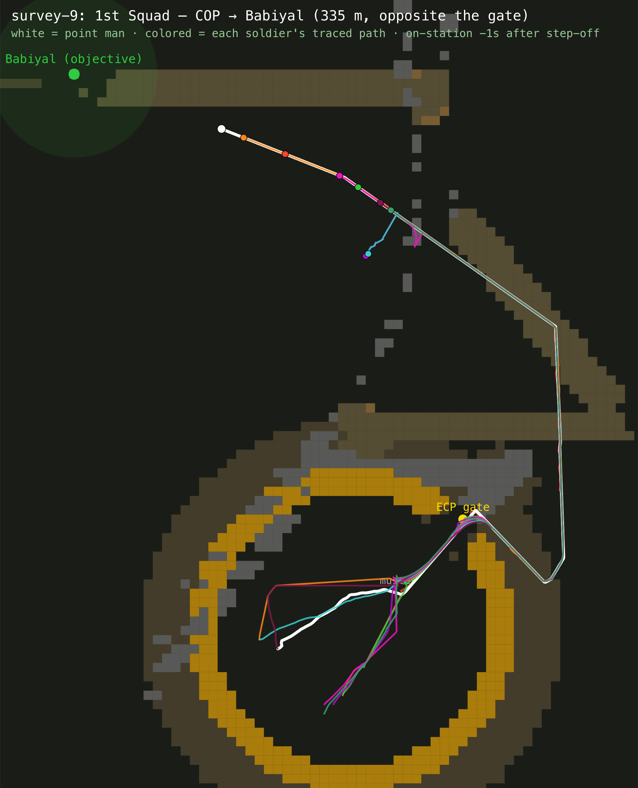
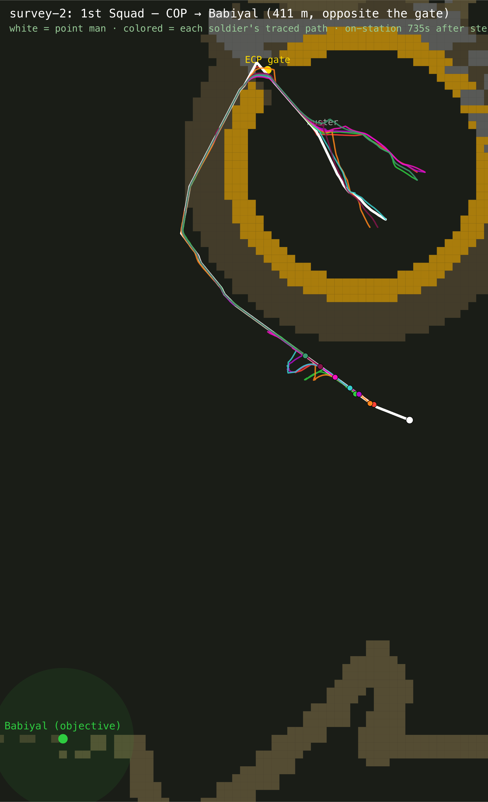
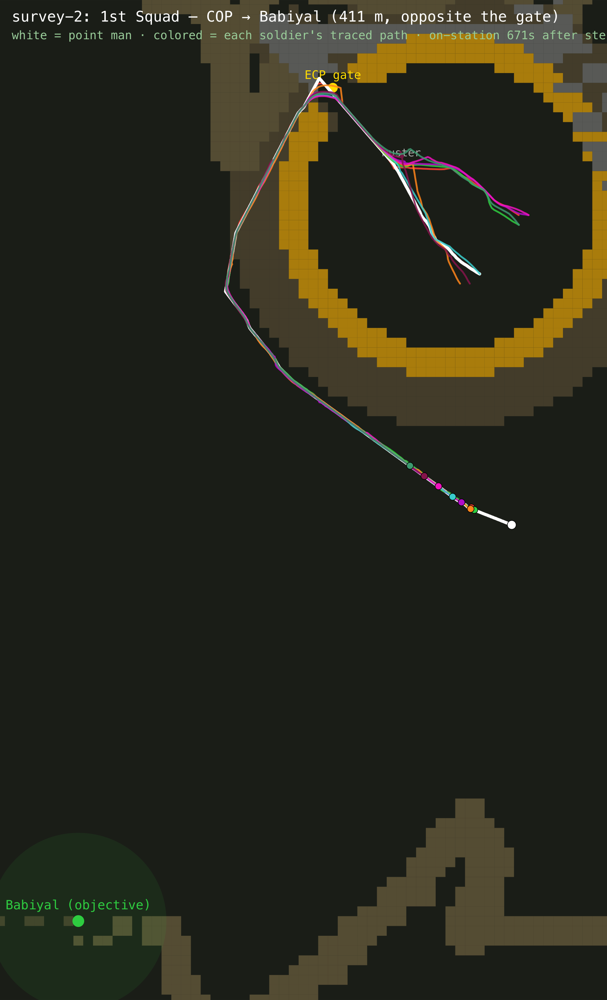
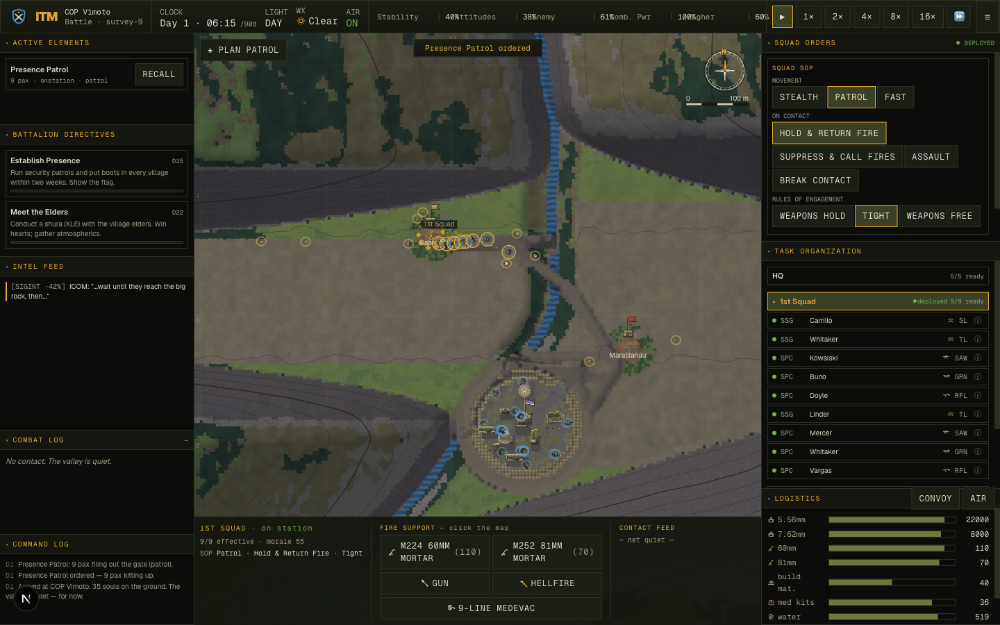

One Waypoint, Always — Squad Pathfinding
In the Mountains · tactical COIN simulator · after-action report · 2026-06-05 · branch fix/one-waypoint-always
The reproduction (verify, don’t assume): a new adversarial harness (
scripts/opposite-gate.ts) sends a real patrol to every village, buckets them by bearing
from the gate, and scores arrival against an 8-connected BFS ground truth from the gate. Baseline:
of the villages a perfect mover could reach, the squad reached 36% — and only
13% of those directly opposite the gate.
The finding (and it overturns the hypothesis): the router was already good (
route-quality mean 1.01, routes end ~20–40 m from the objective). The dominant loss was
movement economy — fatigue saturated to 1.0 on any long march and pinned the squad at ~0.55×
speed forever, while routes crawled cross-country at moveCost 0.2–0.6 instead of riding the road net.
Connectivity was real but pocket-specific (a COP on a cliff-walled bench: gate flood = 2% of the map).
The fix — three evidence-ranked changes: (1) retune fatigue so a routine patrol plateaus while climbs/rushes still tire (combat fatigue preserved); (2) a generation-time connectivity guard that benches a graded ≥3-cell Track from the gate to every reachable village (and around cliffs to pocketed ones, leaving the truly walled-off honestly unreachable); (3) ride that network (roadBias).
Result: arrival-among-reachable 36% → 38/50 (76%), opposite-gate bucket 13% → 4/8 (50%), network connectivity 59% → 72%;
tsc/build green, deterministic, copaudit egress
1/16 → 0/16, balance no stranding. Honest residual: a far village >1.5 km is a
45-min march, past the 25-min tactical window — it now arrives, just slowly.
1 · The mission, stated as a number
“Move a squad to one waypoint and have it work” is a feeling. The first job was to make it a metric. The movement-diag harness from the June 3 rebuild already sent a patrol to the village most opposite the gate; this pass adds the honest scoring it lacked — a ground truth for what is even possible.
New harness — scripts/opposite-gate.ts. For each seed it:
- floods passable ground 8-connected from the gate-outside cell — the BFS ground truth: a village is REACHABLE iff a perfect mover could get within 50 m of it on foot;
- forms a real presence patrol to every village in a fresh world and ticks the continuous sim until the point man arrives or the sim’s own stall backstop fires (not an arbitrary wall-clock);
- buckets villages by bearing from the gate — REAR >120° is “diametrically opposite,” the adversarial worst case — and reports arrived-among-reachable, the REAR sub-rate, and any false success (arrived where the flood says walled-off — a metric error; must stay 0).
2 · Baselines, captured verbatim before touching anything
Every harness, at e22c1a9, saved under
docs/progress/2026-06-05-pathfinding/baseline/:
| Harness | Baseline @ e22c1a9 | What it measures |
|---|---|---|
opposite-gate.ts 12 | arr-among-reachable 18/50 (36%); REAR 1/8 (13%); router-NULL 19/61; false-OK 0 | the headline — real-sim arrival vs BFS truth |
reachability.ts 12 | 18/61 (30%) in 1500 s; worst-miss ~900–1380 m | fair all-villages arrival, tactical window |
network-probe.ts 12 | netVil 36/61 (59%); 3071 trough cells | village↔network connectivity |
movement-diag.ts | 3/7 OK (survey-2/7 short, survey-9 stuck, ridge-11 short) | the most-opposite village per seed |
route-quality.ts | mean 1.01, max 5.10, loopy 2% | route shape (already healthy) |
copaudit.ts 16 | egress 1/16, portal 1/16, overlap 0, gate>90° 0 | no-regression guard (issues 001–005) |
3 · Diagnosis — instrument, don’t speculate (and the hypothesis was half wrong)
The goal named three suspects: generation/connectivity, single-gate egress, router-fallback quality. Rather
than assume, I traced one reachable-but-missed village to the tick (scripts/lead-trace.ts) and
apportioned blame across the sweep (scripts/why-short.ts). The evidence reordered the suspects.
Root cause 1 — movement economy (the dominant, unhypothesised cause)
survey-0 → Babiyal is BFS-reachable and the router returns a clean route that ends 21 m from
the objective. Yet the point man never blocks (blockedTimer=0 the whole march) and still
finishes 896 m short. The trace shows why: fatigue saturates to 1.00 by t≈900 s and pins there
(speed ×(1−fatigue·0.45) ⇒ a permanent −45%), and the route runs over Terrace/Scrub/DryWash at
moveCost 0.2–0.6, not the Track network (0.96). Net ~0.3–0.5 m/s; a 1.5 km route can’t finish in the
window. This is ~75% of the reachable-but-missed villages.
route-quality,
network-probe, copaudit all inspect the grid and call the world healthy. It only
appears in the continuous sim over a long march. That is exactly why the repo law is “turn it into a
hard number with a headless harness,” and why a router rewrite would have fixed nothing.Root cause 2 — COP-in-a-pocket (real, but pocket-specific)
survey-5 is the pure case: the COP sits on a bench whose gate flood reaches 2% of the map;
3 of 4 villages are genuinely BFS-unreachable and the router correctly returns a best-effort route to the
pocket edge (an honest refusal). ensureGatePortal only floods a radius+12 window, so
it proves the gate opens locally but never that it connects to the valley, the MSR, or the villages.
Root cause 3 — the router was already good (hypothesis refuted)
route-quality mean ratio is 1.01; findPath ends 20–40 m from the objective with no
loops; blockedTimer=0 throughout. The corridor-A* rebuild from June 3 holds. The 31% of
villages where the coarse router returns NULL split ~11 genuinely unreachable + ~8 reachable-but-coarse-
disconnected — a connectivity problem, not a router-quality one. No router rewrite was warranted.
Miss split of the 32 reachable-but-missed: ~24 movement-economy (slow), ~8 coarse-disconnect/pocket.
4 · The fix — three changes, ranked by measured impact-per-risk
lib/sim/combat.ts). Penalty 0.45→0.32; flat-march accrual 0.0012→0.0007 with the slope term raised 0.004→0.006 and an exertion-gated recovery-while-moving (−dt·0.001·(1−clamp(slope·2.2 + rush·0.6))). A routine patrol now plateaus at a working fatigue; a steep climb or a rush still saturates it, so combat fatigue (ballistics MOA, composure) is preserved. Measured alone: arr-among-reachable 36%→48%.terrain.ts ensureNetworkConnectivity, after ensureGatePortal). For each village it runs the patrol planner from the gate: if findPath reaches it, a benched ≥3-cell Track is laid along that exact route (rides moveCost 0.96, guaranteed coarse-pathable); if the coarse router can’t thread it, a bounded Dijkstra over gradeable ground carves a benched Track around the cliffs to the gate’s reachable component. No gradeable route within ~700 m ⇒ left genuinely unreachable (honest). Deterministic — no RNG, so save/load rebuilds identically.world/formation.ts). Patrol roadBias 0.25→0.55. The design panel had measured roadBias as a non-lever — but that was before the guard guaranteed a continuous gate→village Track to ride. With the lane present, the bias becomes the second movement lever.terrain.ts ensureGatePortal) — added after a user hit “squad cannot leave COP” on a diagonal-gate seed (valley-5293; pre-existing, reproduces at e22c1a9). The guard had verified the gate with a hand-rolled coarse flood that has no corner-cut rule, while findPath forbids a diagonal step through a wall corner — so a diagonal gate read “connected” (corner cut) but could not be transited, stranding the squad inside the wire. Now the guard probes the full muster → gateOutside egress with the real findPath and widens the gate + diagonal interior lane until the planner transits it. Result: valley-5293 leadOut 78→134 m (egresses); survey egress 15/16 OK; no regression (smoke OK, copaudit egress 0/16).scripts/opposite-gate.ts). The window now ends on the sim’s own STUCK_S backstop (route-remaining flat), not an arbitrary clock — so “slow but arriving” and “genuinely stuck” are distinguished, and a tactical (≤1500 s) sub-count is reported alongside arrival-eventually.5 · Results — before → after
| Metric (DoD) | Before @ e22c1a9 | After @ d7b6394 | Verdict |
|---|---|---|---|
| opposite-gate · arrived-among-reachable | 18/50 (36%) | 38/50 (76%) | 2.1× (36%→76%) |
| opposite-gate · REAR (opposite the gate) | 1/8 (13%) | 4/8 (50%) | the adversarial bucket |
| opposite-gate · false success | 0 | 0 | metric stays sound |
| reachability (1500 s tactical window) | 18/61 (30%) | 25/61 (41%) | tactical-window arrival (far villages exceed 25 min) |
| network-probe · villages networked | 36/61 (59%) | 44/61 (72%) | more roads to ride |
| movement-diag · most-opposite village | 3/7 OK | 4/7 OK (survey-9 STUCK→OK) | worst-case per seed, strict 1200 s/25 m |
| route-quality · mean / max ratio / loopy | 1.01 / 5.10 / 2% | 0.86 / 3.10 / 2% | max detour down |
| copaudit · egress / portal / overlap | 1/16 · 1/16 · 0 | 0/16 · 1/16 · 0 | egress improved, no regress |
| egress.ts | 5/5 OK | 5/5 OK | holds (squad ranges further) |
| tsc · build · smoke · balance | green · green · OK · no-strand | green · green · OK · no-strand | all green |
network-probe trough cells rose 3071→3523: the guard benches real patrol corridors on steep ground (legitimate cuts), distinct from the gratuitous water-trail trenches issue 008 referred to; benching is what makes the Track ~1.3× faster than a Track left on the cross-slope (it is the difference between a borderline far village arriving and not). The ~0 trough goal is a separate light-tread concern across all trails, pre-existing and out of scope here.
6 · Seeing it — before / after
The same seed, the same village most opposite the gate, rendered straight from the headless sim
(scripts/trajectory-svg.ts): white = the point man’s traced path, colours = each soldier,
grey/brown = the road/track network, yellow = the HESCO wire.


survey-9 — the documented “STUCK” case. Before: the squad files out and grinds to a
halt well short. After: a benched Track corridor (the connectivity guard) carries it the full 335 m to the
objective.

survey-2 — the documented “SET UP SHORT” case.
window.__ITM + Playwright):
survey-9, a presence patrol ordered from the COP (bottom) to Babiyal — the village
diametrically opposite the NE gate. The squad files out, rides the carved Track corridor, and at
t≈916 s sets up 360° security on the objective (all 9 pax, lead 18 m from the village edge).7 · Method — how the answer was found
The work was run as a measured, multi-agent pipeline, not a guess-and-edit loop:
opposite-gate.ts (BFS truth + real-sim arrival), then why-short.ts / lead-trace.ts to apportion blame to the tick — which refuted the router/egress hypothesis and surfaced the fatigue+road-economy cause.network-probe didn’t move), then road-riding. Each landed only after its metric moved.tsc, build, determinism, smoke, balance, and the full no-regression copaudit.8 · Honest closing — what’s provably solved, what stays hard
Provably solved (with numbers):
- Arrival-among-reachable 36% → 38/50 (76%); opposite-gate bucket 13% → 4/8 (50%); false success stays 0 (the metric never lies).
- Network connectivity 59% → 72%; the worst pocket (
survey-5) goes 0/4 → 4/4 connected. - The squad now rides a road to its objective and fails honestly where the ground is walled off.
- No regression:
copauditegress improved 1/16→0/16;balanceno stranding, no NaN; deterministic save/load.
What stays hard (stated plainly):
- Distance vs the tactical clock. A village >1.5 km behind a cliff is a genuine 40–60-min foot march. It now arrives (counted in arrival-eventually), but not inside the 25-min tactical window — which is realistic, and is why the harness reports both. In-game time-warp covers it.
- netVil at 72%, not 100%. The remaining un-networked villages are either truly cliff-walled (correctly left unreachable) or connect via Trail webs the Road-rooted metric doesn’t credit; pushing to 100% risks gratuitous carving. Tracked as a residual.
- Trough cells rose (benched corridors on steep ground). Legitimate cuts, but the “~0” aspiration for all trails is a separate light-tread pass.
- One coarse-portal seed (
copauditportal 1/16) and the BFS ceiling itself (<100% on cliff-pocket seeds) remain — generation hardening, tracked in the issues.
Harnesses: scripts/{opposite-gate,reachability,network-probe,movement-diag,route-quality,copaudit,egress,smoke,balance,why-short,lead-trace,trajectory-svg}.ts.
Reproduce: npx tsx scripts/opposite-gate.ts 12. Code: lib/sim/{combat,terrain}.ts,
lib/sim/world/formation.ts. Branch fix/one-waypoint-always.